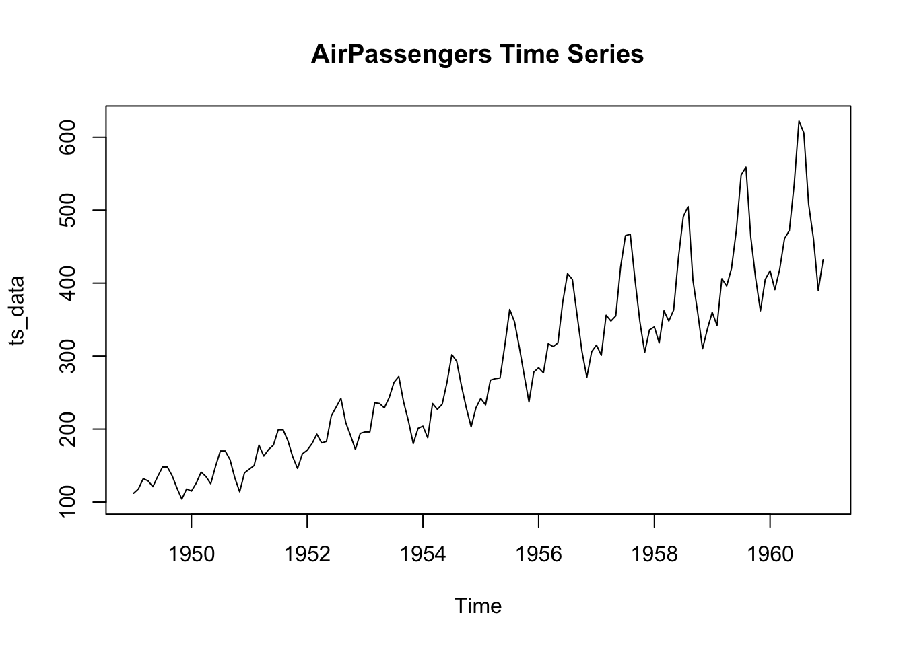
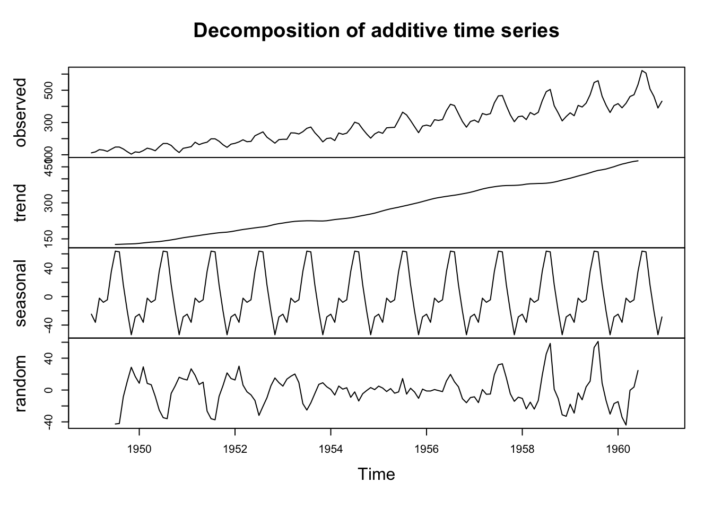
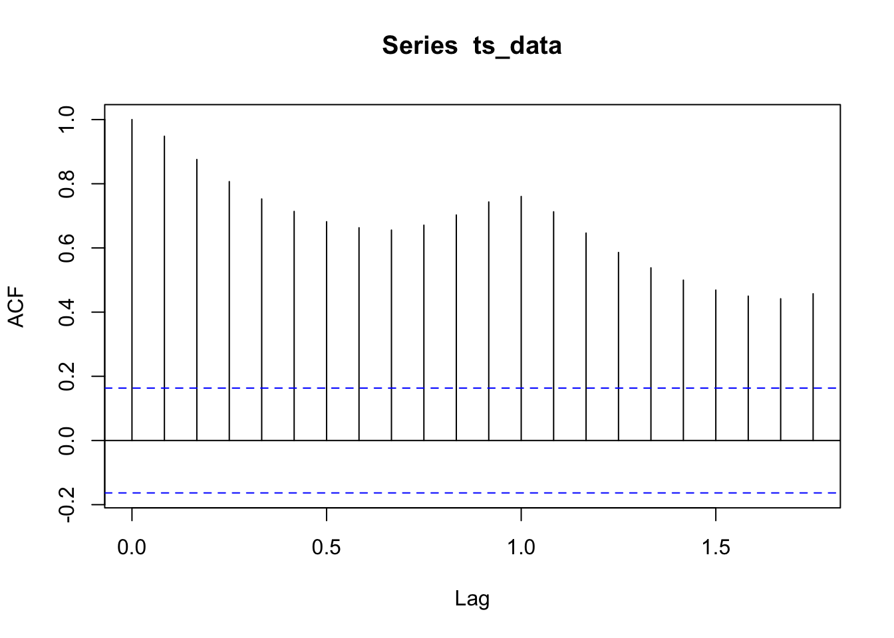
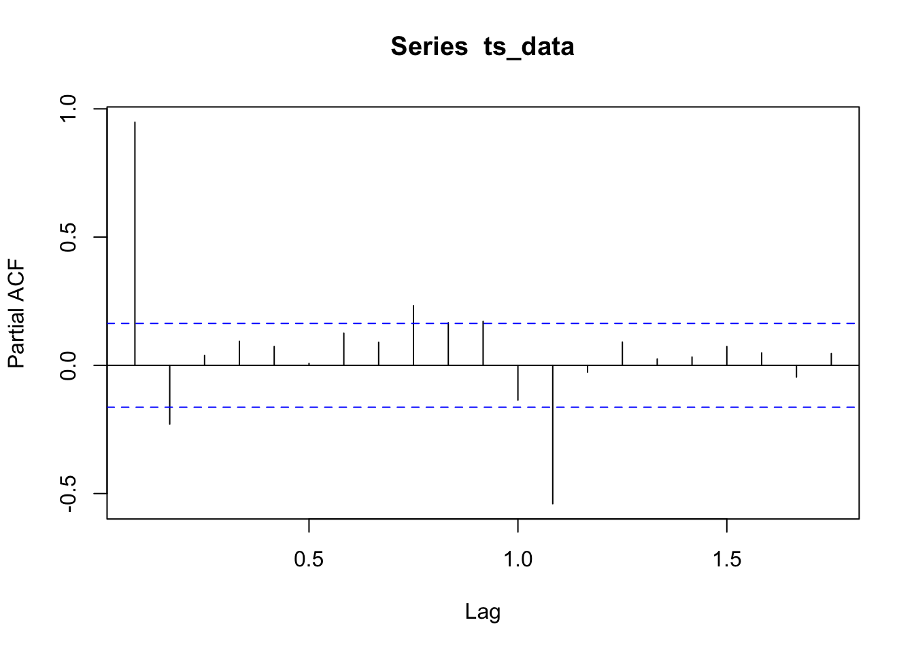

Chapter 6 无监督学习与自然语言
无监督学习是机器学习的一个分支，与有监督学习不同，它不依赖于标记的训练数据，而是从未标记的数据中提取模式、结构和信息。以下是无监督学习的概述：
无标记数据：无监督学习使用无标记数据，这意味着数据集中没有目标变量或标签。学习算法的目标是在数据中发现隐藏的结构或模式，而不是进行预测。
聚类（Clustering）：聚类是无监督学习中的一种常见任务，它涉及将数据分成不同的组或簇，使同一组内的数据点相似，而不同组之间的数据点不相似。K均值聚类和层次聚类是常见的聚类算法。
降维（Dimensionality Reduction）：降维是将高维数据映射到低维空间的过程，以便更好地可视化数据或减少计算复杂度。主成分分析（PCA）和t-SNE是降维的常用技术。
关联规则挖掘（Association Rule Mining）：这个任务涉及发现数据中的频繁项集和关联规则，用于分析数据中的关联关系。它在市场篮分析和推荐系统中经常使用。
生成模型（Generative Models）：生成模型试图捕捉数据的分布，以便生成与数据集相似的新数据点。生成对抗网络（GANs）和变分自编码器（VAEs）是常见的生成模型。
异常检测（Anomaly Detection）：异常检测涉及识别数据中的异常或离群值，这些值与正常数据点有显著差异。这在安全、质量控制和金融领域有广泛应用。
主题建模（Topic Modeling）：主题建模是一种文本分析技术，用于识别文本数据中的主题或话题。潜在狄利克雷分配（LDA）是常用的主题建模算法。
无监督学习的应用：无监督学习在许多领域中都有广泛的应用，包括自然语言处理、图像处理、社交网络分析、生物信息学等。它可以用于数据探索、模式识别、异常检测和生成新数据等任务。
评估无监督学习：无监督学习的评估通常比有监督学习复杂，因为没有目标变量可以用于评估。评估通常依赖于内部指标、可视化和任务特定的度量标准。
无监督学习在数据分析和模式识别中扮演重要角色，它有助于发现隐藏在数据中的信息，从而为决策制定和洞察提供支持。无监督学习技术不仅有助于数据挖掘，还在深度学习和人工智能领域得到广泛应用。
6.1 K 均值聚类
均值聚类（K-Means Clustering）是一种常见的无监督学习算法，用于将数据点分成K个不同的簇或群组，以便每个数据点都属于与之最接近的簇。
K均值聚类原理总结：
初始化：选择K个初始聚类中心，通常是从数据点中随机选择的。这些初始中心将用于后续的聚类。
分配：对每个数据点，计算它与每个聚类中心的距离，将数据点分配到距离最近的聚类中心所代表的簇。
更新中心：计算每个簇的新中心，通常是该簇中所有数据点的平均值。
重复：重复步骤2和步骤3，直到收敛条件满足（例如，中心不再变化或达到预定的迭代次数）。
聚类结果：算法完成后，每个数据点都被分配到一个簇中，得到了K个簇，每个簇有一个中心。
下面是一个使用R语言进行K均值聚类的示例，使用内置的Iris数据集：
# 加载数据集
data(iris)
# 选择特征
X <- iris[, 1:4]
# 运行K均值聚类，这里选择K=3
kmeans_result <- kmeans(X, centers = 3, nstart = 20)
# 打印聚类结果
print(kmeans_result)## K-means clustering with 3 clusters of sizes 50, 62, 38
##
## Cluster means:
## Sepal.Length Sepal.Width Petal.Length Petal.Width
## 1 5.006000 3.428000 1.462000 0.246000
## 2 5.901613 2.748387 4.393548 1.433871
## 3 6.850000 3.073684 5.742105 2.071053
##
## Clustering vector:
## [1] 1 1 1 1 1 1 1 1 1 1 1 1 1 1 1 1 1 1 1 1 1 1 1 1 1 1 1 1 1 1 1 1 1 1 1 1 1
## [38] 1 1 1 1 1 1 1 1 1 1 1 1 1 2 2 3 2 2 2 2 2 2 2 2 2 2 2 2 2 2 2 2 2 2 2 2 2
## [75] 2 2 2 3 2 2 2 2 2 2 2 2 2 2 2 2 2 2 2 2 2 2 2 2 2 2 3 2 3 3 3 3 2 3 3 3 3
## [112] 3 3 2 2 3 3 3 3 2 3 2 3 2 3 3 2 2 3 3 3 3 3 2 3 3 3 3 2 3 3 3 2 3 3 3 2 3
## [149] 3 2
##
## Within cluster sum of squares by cluster:
## [1] 15.15100 39.82097 23.87947
## (between_SS / total_SS = 88.4 %)
##
## Available components:
##
## [1] "cluster" "centers" "totss" "withinss" "tot.withinss"
## [6] "betweenss" "size" "iter" "ifault"相关参数 :
选择K值：选择合适的K值通常需要依赖领域知识或尝试不同的K值并使用内部或外部指标来评估聚类的性能，如肘部法则（Elbow Method）。
初始化方法：K均值聚类对初始中心的选择敏感。你可以尝试不同的初始化方法，如K均值++或Forgy，以找到最佳初始中心。
距离度量：默认情况下，K均值使用欧氏距离，但你可以尝试其他距离度量方法，如曼哈顿距离，闵可夫斯基距离等。
迭代次数：你可以调整最大迭代次数，以确保算法能够在有限的时间内收敛。
6.2 层次聚类
层次聚类（Hierarchical Clustering）是一种常见的聚类分析方法，它根据数据点之间的相似性将数据层次化地组织成树状结构，这个树状结构称为聚类树或树状图。
层次聚类原理
- 凝聚型层次聚类：凝聚型层次聚类从每个数据点作为单独的簇开始，然后逐渐合并具有最小距离的簇，直到所有数据点都在一个簇中为止。
- 分裂型层次聚类：分裂型层次聚类从一个包含所有数据点的簇开始，然后逐渐将簇分裂成更小的簇，直到每个数据点都成为一个簇。
在凝聚型层次聚类中，通常使用以下步骤：
- 初始化：将每个数据点作为一个独立的簇。
- 合并：找到最接近的两个簇，将它们合并成一个新的簇。
- 计算距离：计算新簇与其他簇之间的距离，通常使用单链接（Single Linkage）、完全链接（Complete Linkage）或平均链接（Average Linkage）等方法。
- 重复：重复步骤2和步骤3，直到只剩下一个簇。
- 构建聚类树：根据合并历史构建聚类树，以可视化聚类结构。
下面是一个使用R语言进行凝聚型层次聚类的示例
# 加载数据集
data(iris)
# 选择特征
X <- iris[, 1:4]
# 运行层次聚类
hc_result <- hclust(dist(X), method = "ward.D2")
# 将聚类结果划分为K个簇
k <- 3
clusters <- cutree(hc_result, k)
# 打印聚类结果
print(clusters)## [1] 1 1 1 1 1 1 1 1 1 1 1 1 1 1 1 1 1 1 1 1 1 1 1 1 1 1 1 1 1 1 1 1 1 1 1 1 1
## [38] 1 1 1 1 1 1 1 1 1 1 1 1 1 2 2 2 2 2 2 2 2 2 2 2 2 2 2 2 2 2 2 2 2 2 2 2 2
## [75] 2 2 2 3 2 2 2 2 2 2 2 2 2 2 2 2 2 2 2 2 2 2 2 2 2 2 3 2 3 3 3 3 2 3 3 3 3
## [112] 3 3 2 2 3 3 3 3 2 3 2 3 2 3 3 2 2 3 3 3 3 3 2 2 3 3 3 2 3 3 3 2 3 3 3 2 3
## [149] 3 2层次聚类相关参数
- 距离度量方法：你可以尝试不同的距离度量方法，如欧氏距离、曼哈顿距离、相关性等。
- 链接方法：根据问题的性质，你可以选择不同的链接方法，如单链接、完全链接、平均链接等。
- 簇的数量K：你可以通过树状图或内部/外部指标来选择最佳的簇的数量K。
- 数据预处理：根据数据的特性，你可以进行标准化或缩放等预处理步骤。
6.3 DBSCAN
DBSCAN（Density-Based Spatial Clustering of Applications with Noise）是一种密度聚类方法，它能够发现具有不同密度的簇，并能够有效地识别异常值。
DBSCAN原理:
- 核心对象（Core Object）：DBSCAN基于核心对象的概念。核心对象是一个数据点，如果在其附近的半径ε内至少有MinPts个数据点，就会形成一个密集区域。
- 密度可达（Density-Reachable）：一个数据点p是从核心对象q密度可达，如果存在一个核心对象的路径通过一系列核心对象连接到p。
- 密度连接（Density-Connected）：两个数据点p和q是密度连接的，如果存在一个核心对象o，使得p和q都密度可达于o。
DBSCAN算法步骤：
- 从数据集中选择一个未被访问的数据点p。
- 如果p的ε-邻域内至少包含MinPts个数据点，将p标记为核心对象。
- 从p的ε-邻域内选择一个未被访问的数据点q，将q标记为已访问。
- 如果q是核心对象，将其ε-邻域内的未被访问的数据点逐一加入队列。
- 重复步骤3和步骤4，直到队列为空。
- 重复步骤1-步骤5，直到所有数据点都被访问。
下面是一个使用R语言进行DBSCAN聚类的示例
##
## Attaching package: 'dbscan'## The following object is masked from 'package:stats':
##
## as.dendrogram# 加载数据集
data(iris)
# 选择特征
X <- iris[, 1:4]
# 运行DBSCAN聚类，设定半径ε和最小数据点数MinPts
dbscan_result <- dbscan(X, eps = 0.3, MinPts = 5)## Warning in dbscan(X, eps = 0.3, MinPts = 5): converting argument MinPts (fpc) to
## minPts (dbscan)!## DBSCAN clustering for 150 objects.
## Parameters: eps = 0.3, minPts = 5
## Using euclidean distances and borderpoints = TRUE
## The clustering contains 3 cluster(s) and 96 noise points.
##
## 0 1 2 3
## 96 37 12 5
##
## Available fields: cluster, eps, minPts, dist, borderPoints在上述示例中，我们使用了dbscan函数进行DBSCAN聚类，设置了半径ε和最小数据点数MinPts来定义密度阈值。
DBSCAN 相关参数
- 半径ε（eps）：调整ε的大小以适应数据的密度。较小的ε将导致更多的簇，而较大的ε将导致更少的簇。
- 最小数据点数（MinPts）：根据数据集的特性，选择合适的MinPts。通常，MinPts的值应大于数据的维度。
- 距离度量方法：DBSCAN可以使用不同的距离度量方法，如欧氏距离、曼哈顿距离等。
- 噪声处理：DBSCAN可以有效地识别和处理噪声点（不属于任何簇的点）。
DBSCAN是一种强大的聚类方法，特别适用于发现具有不同密度的簇。通过调整参数，可以获得适合数据特性的聚类结果。
6.5 时间序列
时间序列分析是一种用于处理时间相关数据的统计方法，它通常用于预测未来值、发现趋势和季节性模式以及分析时间序列的性质。
- 时间序列数据：时间序列数据是按时间顺序排列的数据点，通常包括连续的时间间隔。这些数据可以用于分析时间的变化趋势、季节性、周期性和噪声。
- 分解时间序列：时间序列通常可以分解为趋势、季节性和残差成分。趋势表示长期变化趋势，季节性表示周期性变化，残差表示随机噪声。
- 平稳性检验：时间序列分析通常需要满足平稳性假设。你可以使用统计检验方法来检查时间序列是否平稳。
- 自相关和偏自相关函数：自相关和偏自相关函数是用于分析时间序列的工具，它们可以帮助识别趋势、季节性和滞后效应。
- 建模和预测：建立时间序列模型，如ARIMA（自回归综合移动平均模型）或指数平滑模型，然后使用模型进行预测。
下面是一个使用R语言进行时间序列分析的示例，
## Registered S3 method overwritten by 'quantmod':
## method from
## as.zoo.data.frame zoo# 将数据转换为时间序列对象
ts_data <- ts(AirPassengers, start = c(1949, 1), frequency = 12)
# 绘制时间序列图
plot(ts_data, main = "AirPassengers Time Series")

## Warning in adf.test(ts_data): p-value smaller than printed p-value##
## Augmented Dickey-Fuller Test
##
## data: ts_data
## Dickey-Fuller = -7.3186, Lag order = 5, p-value = 0.01
## alternative hypothesis: stationary

# 建立ARIMA模型
arima_model <- arima(ts_data, order = c(2,1,2))
# 预测未来值
forecast_result <- predict(arima_model, h = 12)
print(forecast_result)## $pred
## Jan
## 1961 483.8637
##
## $se
## Jan
## 1961 29.78627在上述示例中，我们加载了AirPassengers数据集，将其转换为时间序列对象，绘制了时间序列图，并对其进行了分解、平稳性检验、自相关和偏自相关函数分析、ARIMA建模以及未来值的预测。